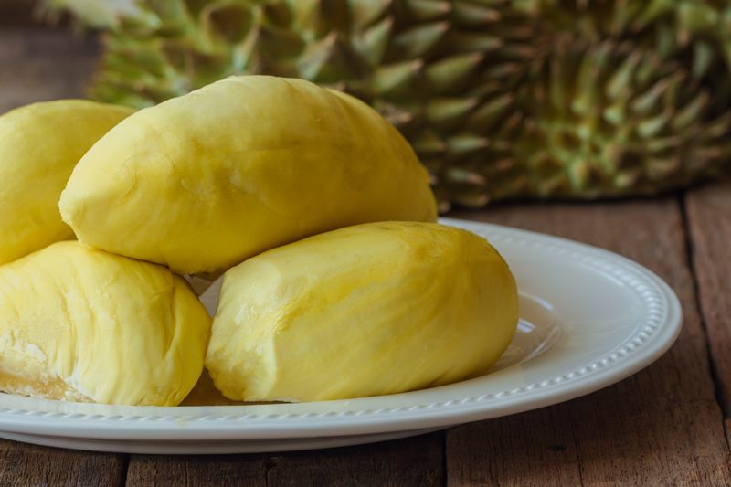
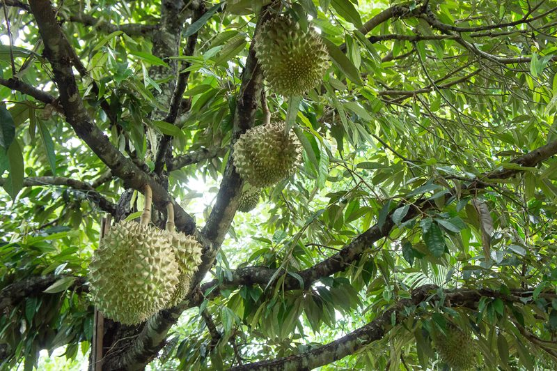
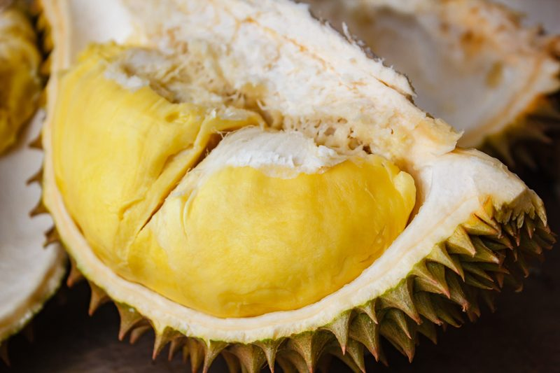

Durian – Get the Stink out of Here
Its ungodly odor, described either as turpentine or onions garnished with a gym sock, is enough to create quite the chaos when opening. NCBI released a study that analyzed the aromatic compounds in durian and found 44 active compounds, including ones that contribute to scents of skunk, caramel, rotten egg, fruit and soup seasoning. The fruit’s smell is so potent that it’s forbidden from many hotel rooms and public transport systems in Southeast Asia.

You’re still here reading?! Wow, I am impressed with your level of curiosity. I get it, I truly do… how can something so stinky be so popular to eat? When Bob and I attended culinary school, durian taste testing was on the schedule of things to do. I will never forget that day.
The class had gathered around a large table where one of the instructors displayed a durian. There it sat in all its glory. Hard, spiky, and promising to cause many to run upon opening. She grabbed a knife and started to make the first cut. You could hear a pin drop in the room… everyone stood there holding their breath.
Once the knife slid through the rough exterior, you could hear muffled gaging responses all throughout the room. It did smell bad, but it wasn’t enough to turn me away. Soon she gently removed the inner pods of durian flesh… they were actually quite beautiful. She cut it into pieces and placed them on a plate for students to pass around. A few people left the room, some backed away in disgust, others wafted the air as though trying to clear a thick smog. Bob and I stood our ground and waited patiently for the plate to pass before us.
The plate arrived quicker than I expected. Nobody wanted the plate to linger too long in front of them. Bob and I took our first bite and found it rather pleasurable. To me, it tasted just like a sweet onion custard. With each nibble, the taste grew on me, and I knew that it would be something that I would enjoy down the road.
Within just a few minutes of cutting the durian open and the passing of the plate, the instructor said that we needed to dispose of the durian shell ASAP. Otherwise, we would be responsible for evacuating the whole building. She asked for a volunteer, and Bob quickly raised his hand. Everyone else looked relieved. As Bob was walking out to the dumpster, he stuck his head into the plastic bag that held the remains. He was inhaling deeply, trying to catch a whiff of the off-putting aroma. You see, Bob has no sense of smell, yet he can taste foods with great complexity. So, if it were up to him, we could eat durian daily… but for me, well, it’s a nice “treat” to experience from time to time. hehe
Approach with an Open Mind
 Until you’ve had durian, there’s no way to guess what it tastes like. We don’t go around comparing apples to bananas, so drop any preconceived ideas as to what you think it may or may not taste like. Be open-minded.
Until you’ve had durian, there’s no way to guess what it tastes like. We don’t go around comparing apples to bananas, so drop any preconceived ideas as to what you think it may or may not taste like. Be open-minded.
This isn’t your typical fruit stand treasure that is found in most supermarkets here in the states. Want a tropical experience? Great, because just one bite of durian is a creamy explosion of incongruent flavors that lights up taste receptors all over the tongue.
What does it Taste Like?
That’s a great question and one that will vary from experience to experience. I have heard of it referred to as butterscotch pudding, onions caramelized in wine… Regardless of what it supposedly tastes like, just relax and let the cacophony of flavors blow you away. Durian is different (in a good way).
Avoid Overripe & Underripe Durians
That may seem obvious, but there’s an art to selecting a good durian and if you want your first experience to be a good one, then pay attention. They can be eaten at various degrees of ripeness. Some people prefer them slightly underripe, like those who prefer their bananas green. Others, notably the Indonesians, often prefer a durian so ripe it’s developed an alcoholic bite.
Overripe
- Durians with fungus/mold spots on the shell will taste watery and moldy.
- If the stem is totally wrinkled up, dark brown wisp… keep walking, it has gone bad.
- If it’s already splitting wide naturally, it’s past its prime.
- If the inner flesh is rock hard, keep looking.
- If the inner flesh is so soft that you can almost see through it, look for a firmer one.
- If it smells really strong, chances are it’s overripe.
Underripe
- Durians picked underripe may not ripen properly and can have no flavor at all, some have described it as having an unpleasant undertone that tastes like metallic scrambled eggs.
- If the durian has no smell at all, chances are it’s not ripe.

What to Look for in a Good Durian
Durian is a unique tropical fruit. It’s popular in Southeast Asia, where it’s nicknamed “the king of fruits.” They grow in tropical regions around the world, particularly in the Southeast Asian countries of Malaysia, Indonesia, and Thailand. So much for growing a You-Pick-It farm here in Hood River, Oregon. hehe
Keep in mind that none of the following techniques work with frozen durian which is what most of us here in the states will come across. In the U.S., you can only find durians at Asian markets where the durians come frozen whole or already popped from their shells and prepackaged in plastic containers.
Shake It
- One of the easiest ways to tell if a durian is ripe is to hold it to your ear and shake it. The flesh of a ripened durian is soft, which allows the seeds to bang around inside the shell.
Thump It
- Another way to detect a good one is to thump it. If it sounds slightly hollow, it means the flesh has softened enough to recede from the shell, and the durian is at least edible. Various levels of hollowness correlate to levels of softness. Know what you like.
Thumb Pressure
- Position your thumb over one of the swollen lobes of durian so that all that separates you from the inner flesh is the half-inch or so of the shell.
- Maneuver your thumb in between the thorns and press down.
- If the durian is ripe, the shell will actually give a little under pressure, like a hard sponge.
- If it’s not ripe, you might as well be pressing on concrete.
Combined with Smell Test
- Smell along the indentations of the durian where the durian seeds are nearest. If the smell is strong, it’s ripe. If it smells raw, that means it’s unripe.
- You should experience a low level, earthy yet sulfurous smell, like fresh cut grass and scrambled eggs.
Frozen is your only Option
- Freezing durian slightly changes the texture, making it looser and more stringy.

How to Open a Durian
- Lay paper on the counter or floor (this can get messy).
- With a large, sharp knife, make a deep score in the outer hull, about eight to ten inches long.
- Due to the spiky shell, you will want to wear some gloves to protect your hands.
- Cut the shell with a knife and then pry it open with your hands.
- Take the knife and score a deep cut in the fibrous “rib” in the center of each half.
- Gently remove the sections of durian flesh.
- You can then eat it fresh on its own.
Now… What to do with it!
It is used in sweet and savory dishes. Both the creamy flesh and seeds are edible, although the seeds need to be cooked. If you first just want to experience all that durian has to offer… I would simply enjoy it as is. Before one can really get creative with it, you must understand its smell and texture, just like any other food. From there, you can get creative with it. I hope you enjoyed this little insight on durian. blessings, amie sue
© AmieSue.com